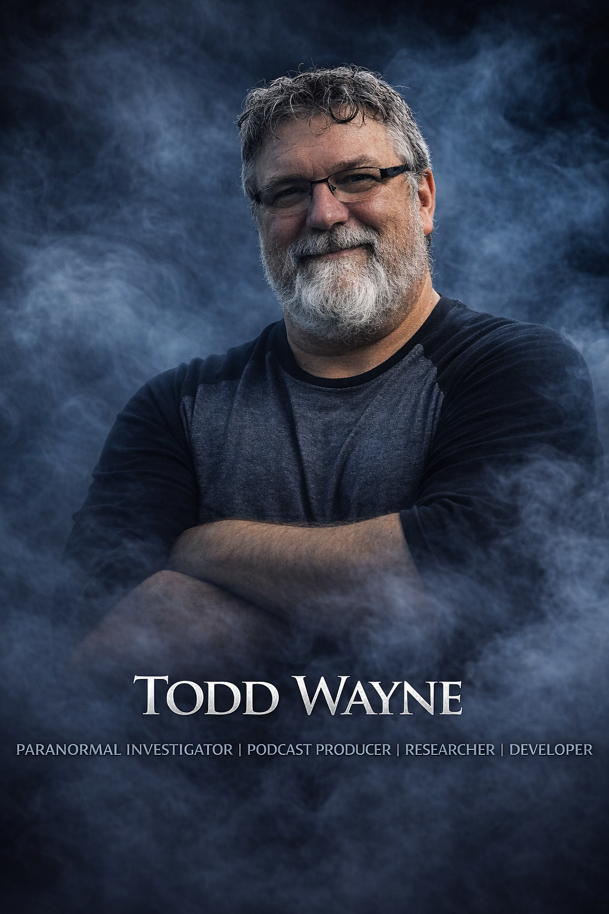

Todd Wayne is a seasoned paranormal investigator with over three decades of experience in research, field investigation, and case analysis. With roots tracing back to his first personal experience in 1981 and formal investigative work beginning in 1996, Todd has dedicated his life to understanding the unknown through disciplined inquiry rather than assumption.
Throughout his career, Todd has built a reputation for approaching the paranormal with a grounded, evidence-based mindset. His work emphasizes structure, critical thinking, and ethical responsibility. He founded the Pasco Paranormal Research Society in 2000 and later established the Somerset Paranormal Research Society in 2022, where he continues to lead investigations focused on environmental analysis, data correlation, and responsible case evaluation.
His leadership has also extended to national-level involvement, having served as Director of the National Paranormal Society's Aliens & UFOs Department and later as Director of the National Paranormal Society from 2012 to 2013. His interdisciplinary approach draws from environmental science, structural behavior, meteorology, psychology, electrical systems, and human perception so natural explanations can be ruled out before any claim is considered potentially unexplained.
Beyond field investigations, Todd is deeply involved in education and outreach. Through his Ghostology 101 framework, he helps investigators build a structured and responsible approach to the field. He is also the executive producer and co-host of Crossroads of the Unknown, a weekly podcast hosted alongside Roni Healan exploring haunted locations, spiritual practices, ghost stories, unexplained phenomena, and firsthand encounters with the unknown.
Todd previously served as executive producer of Paranomaly: Beyond Disclosure and is the creator of Paranormal Pro | The Paranormal Initiative, a professional investigation platform designed to bring structure, accountability, and credibility to paranormal research. He began developing Paranormal Pro out of a growing concern with the direction of the field, recognizing the need for a disciplined system for documentation, analysis, and case evaluation.
As part of this initiative, Todd is developing the Paranormal Pro app for the Apple ecosystem, guiding investigators through every phase of a case from intake and walkthrough to baseline, investigation, evidence review, and final classification. Designed for both individuals and teams, the platform strengthens discipline, consistency, and accountability without replacing the investigator's judgment.
At the core of Todd's work is a commitment to Truth, Honor, Integrity, and Credibility. His mission is to raise the standard of paranormal investigation through structure, education, and evidence-based practice, ensuring every case is approached with responsibility, integrity, and respect for both the unknown and those seeking answers.